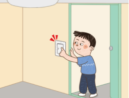
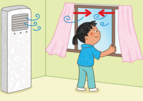
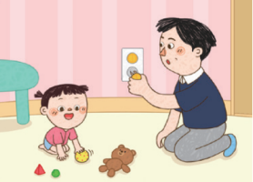
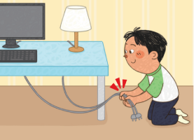
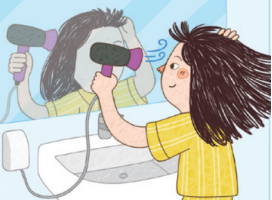

1번
전기를 절약하고 안전하게 사용하는 방법으로 옳은 것을 두 가지 고르세요.

1
사용하지 않는 전등을 항상 켜두면 전기를 절약할 수 있다.

2
에어컨을 켜고 선풍기를 함께 사용하면 전기를 절약할 수 있다.

3
콘센트를 사용하지 않아도 온도조절을 위해 콘센트를 항상 열어 둔다.

4
전선을 어지럽게 꼬아서 사용하면 화재가 발생할 수 있으므로 전선을 정리하여 사용한다.

5
화장실처럼 물을 사용하는 곳에서는 콘센트에 물이 들어가도 전기를 안전하게 사용할 수 있다.